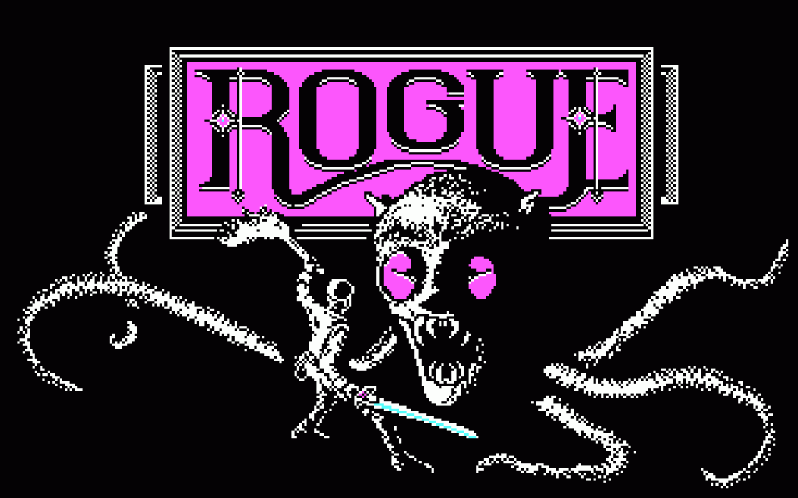

Здраствуйте. Все те кто зашёл на этот сайт. На нём я буду, идя по таймлайну ролика снизу, расказывать короткое описание игр. В принципе этот сайт не нужен, но камон прочитайте его если лень смотреть видео.
Сразу скажим 3 главных аспекта: 1) случайная генерация, 2) пошаговость в игре, 3) необратимая смерть, а также нужно упоменуть о 2 которые казалось бы подразумеваются как сами собой разумеющиеся но их стоит озвучить: 4) множество вариантов прохождения, 5) самостоятельное изучение игры.
Прародитель жанра. Эта игра очень старая, даже старше меня. И как видите на картинке игра сделана из букваря и шифра морзе. Игры тогда были крайне простыми, так что о концепции "свой собственный жанр" не существовало. Это обычная игра на Unix системах с открытым кодом в которую могли играть студенты и как не странно большинство того что на данный момент является фичами жанра, являлось тогда оптимально необходимостью. Сейвы в те времена в игре было сложно сделать, так что игрока закидывали в рамки одной жизни. В место одинаковах уровней сделана случайная генерация, ведь человек захочет перепройти игру сново и снова.(+Реиграбельность) И пошаговость была тупо удобнее Real Time системы и не нагружала так сильно машины. Справедливости ради пошаговость характерна для практически всех игр того времени. Как говорил сам разработчик спустя несколько лет:"Основная проблема RPG - заключается в однообразии проходящего и в невозможности пройти игру снова с прежним интересом". Как сказал Obsidian Time (автор видео выше) которому я верю:"Знаете я посмотрел как она играется, и должен сказать восьмидесятого вполне не плохо!" А цель была в случайно сгенерированом подземелье добратся до самого нижнего этажа, заполучить там омулет Йондера (на него кстати делают кучу отсылок в других рогаликах) и поднятся снова на вверх. При этом был большой выбор предметов и разнообразие врагов. Держим в голове что это прародитель жанра. Rogue понравился большенству игроков и в скоре появилось множество ремейков продолжений.